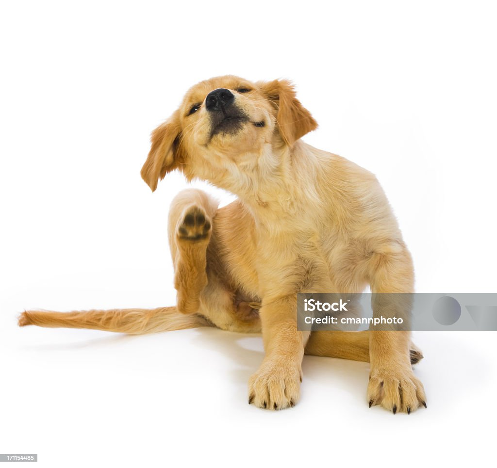

강아지가 진드기에 물렸을 때
피부가 붓고 빨갛게 부어오름, 해당 부위를 자주 핥음

강아지가 갑자기 사료를 안 먹을 때
- 사료만 거부하는 경우 - 단순 입맛 문제일 수 있습니다
- 간식까지 안 먹는 경우 - 건강 이상을 의심해야 합니다
- 물까지 안 마시는 경우 - 탈수 위험이 높고, 대사성 질환의 신호일 수 있습니다

강아지가 갑자기 구토를 할 때
- 생리적 구토 – 급하게 음식을 먹거나 공복 상태에서 담즙을 토하는 등 일시적이고 비교적 가벼운 경우
- 병적 구토 – 하루에 여러 번 토하거나, 토사물에 피나 이물질이 섞여 있는 경우처럼 질병과 관련된 심각한 상황
강아지 슬개골 탈구
강아지 슬개골 탈구는 슬개골이 정상적인 위치에서 벗어나 탈구되는 질환
슬개골 탈구 관리 및 예방
- 체중 관리
- 미끄럼 방지 패드 사용
- 정기적인 검진
- 물리치료
강아지 쿠싱 증후군
강아지 쿠싱 증후군은 강아지의 부신에서 스트레스 호르몬인 코르티솔(Cortisol)이 과도하게 분비되면서 발생하는 내분비 질환입니다
원인 3가지
- 뇌하수체 종양
- 부신 종양
- 장기적인 스테로이드 사용
증상
- 물을 많이 마시고, 소변 양이 증가한다
- 식욕의 비정상적인 증가
- 배가 팽창되고, 근육이 빠져 배가 처짐